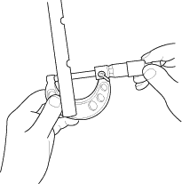
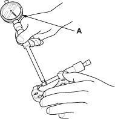
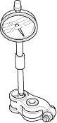

- Remove the rocker arm assembly (see page 6-28).
- Measure the diameter of the shaft at the first rocker location.

- Zero the gauge (A) to the shaft diameter.


- Measure the inside diameter of the rocker arm and check it for an out-of-round condition.
Rocker Arm-to-Shaft Clearance:
Standard (New):
0.025 - 0.052 mm
(0.0010 - 0.0020 in.)
Service Limit:
0.08 mm (0.03 in.)

- Repeat for all rocker arms and both shafts. If the clearance is over the limit, replace the rocker shaft and all overtolerance rocker arms. If any VTEC rocker arm needs replacement, replace rocker arms (primary, mid and secondary) as a set.